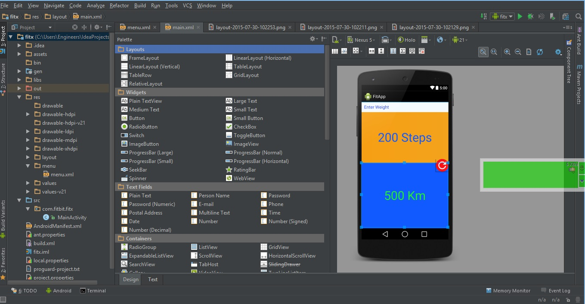

Amonsoft

Apply For your SmartPhone Today
Personal Details
Submitted form data
At Amonsoft we very much believe at mobile first technology , and in that way we are taking this very serious by contributing to mobile devlopment and distribution. We as Engineers are studying the way mobile technology apps and technology are built , and we are engaging fresh minds to help us create and develop new perspectives.
Andriod is at an interesting point in history,where over One billion people carry it and use it daily. It collects mind bubbling data. We here look at it as a way to reach more people, get services more out there .
iOS development has been pinnacle in our current mobile ecosystem , making the most money for developers and having a large base for a single deveice Iphone , that doesnt have the issue of screen Fragmentation. But due to its closed Source structure, we are unable to contribute to its open source nature, but instead we are building applications


Tools Used at Amonsoft
At Amonsoft we power our technology and products using some of the high class product on market.We as a mobile development company, try as much as possible to utilize differnt tools to achieve efficency , Productivity, fluidity and comfort when working to ensure of products work on as many platforms as possible and reach as many people as possible. We provide this comprehensive list of how we operate and the differnt tools we use to showcase what a small company can use and utilize to create high class top notch products.
- Servers
- Text-Editors
- Web Frame-Works
- Compilers
- Web Browsers
- Andriod Tools
- Databses
- Analytics Tools
- Programming Languages
- Image Editors and Analyzers
- git Tools
- FTP tools
We use many Servers at Amonsoft to run and test our products in House, and one of our major key factors when selecting a server ;
We use many Text Editors at Amonsoft still dependant on the project and sometimes preference to an Engineer. We take time to carefully select whic is suitable based on a number of factors;
Managment Team
Top Team #1
Engineers
Amon.N. ,BSc. Software Engineering(MUK)

Marios .T. , BSc. Software Engineering(MUK)
Timothy .S., BSc. Information Technology(MUK)
Business Team
Daniel.M. ,BSc.Commerce(MUK)
Davis.B.M., BSc. Commerce(MUBS)
Projects
Fitness Application Project #1 Innovex.org Site #2
Amonsoft Polymer Website #3
Amonsoft Application X #4
Amonsoft Project VR X #5
Amonsoft OpenSource Cloud Project #6